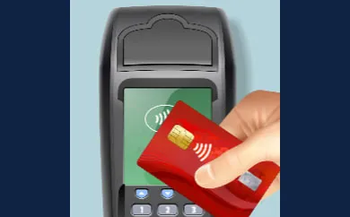
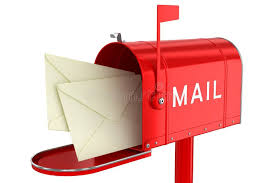

<div class="textcontainer">
<h3>Week 1: Final Project Proposal</h3>
<p class = "margin"></p>
<h4>Idea 1: Tap to Hear</h4>
<p class = "margin"></p>
<div>

<p>Given that I'm graduating this year, I would love to create a physical memory box that allows me to listen to voice messages from friends! I think it'd be cool for each friend to have some sort of card/item that I can scan on the box, leading to it playing one of the person's recorded audio messages for me! Ideally, these memories would be able to continuously be added to (so hopefully I can add people to cards easily, and friends can add messages without needing the card itself). The box would ideally make some noise or tune to show it tapped successfully, and it will play any random audio from that person.</p>
</div>
<p class = "margin"></p>
<h4>Idea 2: You've Got Mail!</h4>
<p class = "margin"></p>
<div>

<p>I think it'd be fun to build a physical "mailbox" that allows my friends/loved ones/myself to send media (text, drawings, short audio clips, etc) to me that are delivered at a chosen time and date as physical, tangible items. I love the feeling of anticipation when mail is coming, so it would be fun if there was a screen that let me know that something was coming my way (but not necessarily the time). When there's "mail" to collect, the flag will lift. Once I lower the flag, it will print/play the message for me! </p>
</div>
</div>